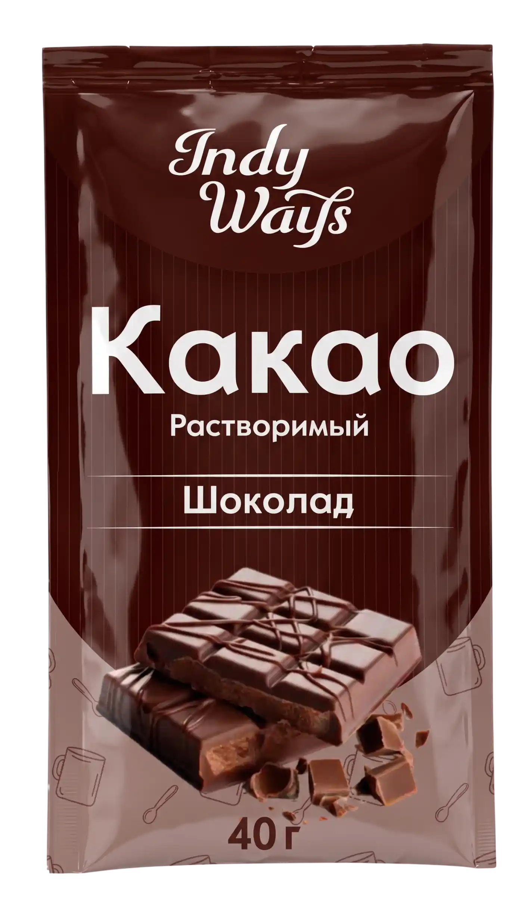
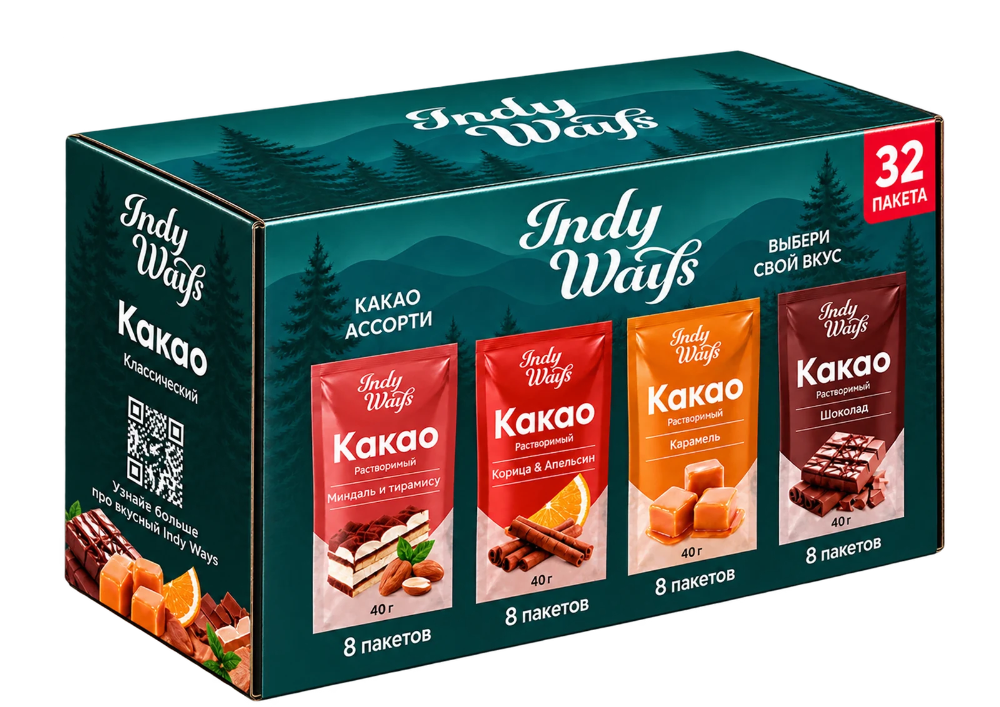
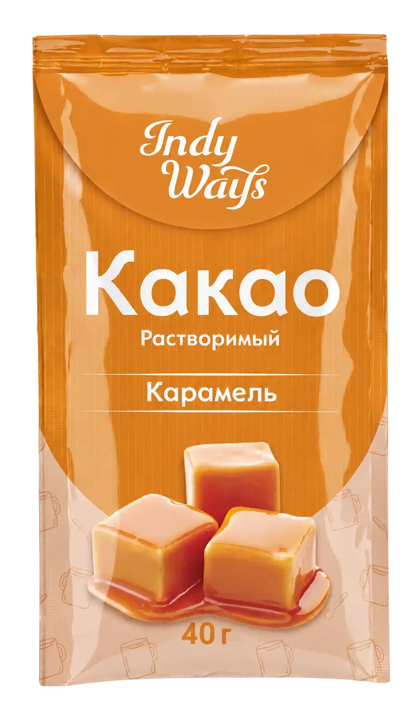
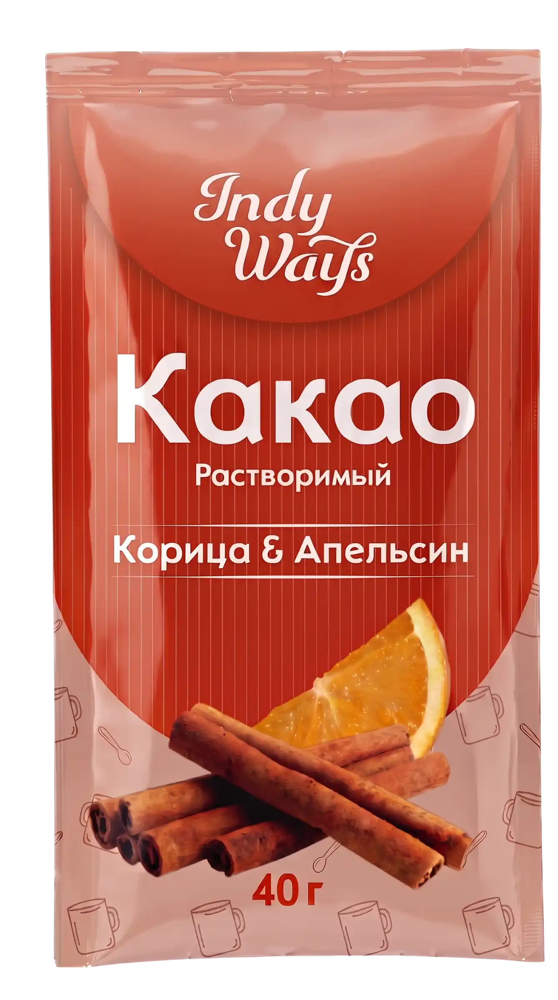
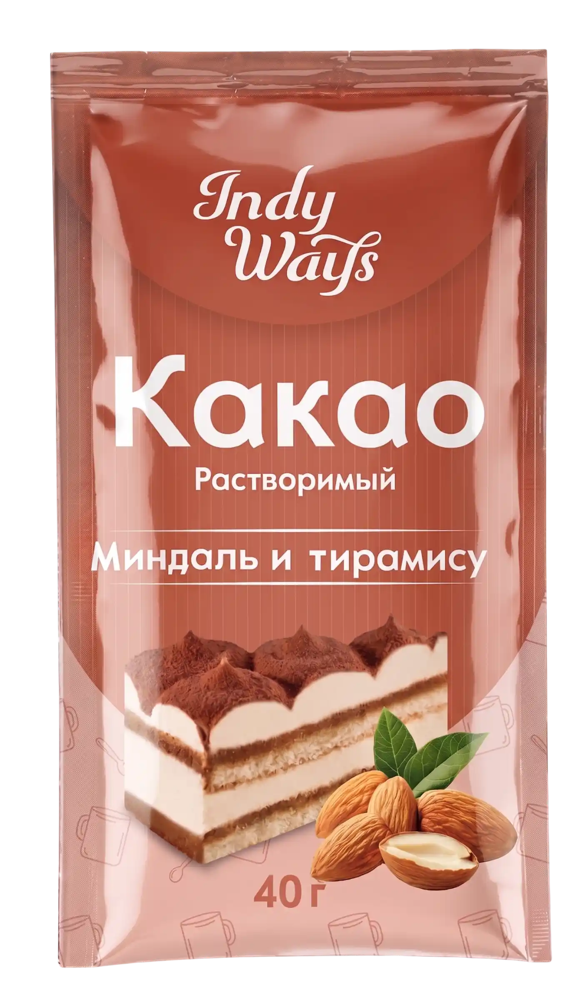

Тёмная база
Высший шоколад
Глубокий вкус для тех, кто любит какао без компромиссов.
Одна порция, четыре характера и ни одной лишней сложности. Для дома, офиса, дороги — просто откройте пакетик и выберите свой момент.


Мы превратили длинное описание продукта в простой маршрут. Выберите сценарий — и сразу увидите подходящий вкус и способ приготовления.
Порция 40 г уже рассчитана на одну чашку. Налейте 170 мл горячей воды, размешайте — и можно возвращаться к своим делам.
Выбрать вкус ↗
5 секунд
Глубокий вкус для тех, кто любит какао без компромиссов.
Мягкая сладость и тот самый аромат карамельной корочки.
Пряный цитрус для медленного утра и длинных разговоров.

Десертный вкус, который превращает обычную чашку в событие.
Мы убрали всё, что мешает вкусной паузе. Состав уже внутри — остаётся только выбрать температуру и настроение.
Не нужно отмерять смесь или искать большую банку.
Вся порция рассчитана на один напиток.
Горячей — для классики, холодной и льда — для прохлады.
Пять секунд — и можно возвращаться к важному.
На реальном сайте информационные блоки можно читать как маршрут: от базы к настроению, от настроения к покупке. Мы показываем эту логику визуально, чтобы посетитель быстрее нашёл «свой» вариант.
Порционный формат помогает контролировать расход, держать несколько вкусов под рукой и не превращать приготовление в отдельный процесс.